Christoph Vogel
I am a Senior Researcher at the Microsoft Spatial AI Lab in Zurich, where I have worked since 2018. My current work concerns generative AI, with a focus on efficient generative imaging and image editing. From 2015 to 2018, I was a postdoctoral researcher in Thomas Pock’s VLO group at the Institute of Computer Graphics and Vision, TU Graz. I received my PhD on 3D motion estimation from ETH Zurich in 2015.
My active research includes generative imaging as well as visual localization and mapping. I am also experienced in and interested in 3D reconstruction, multi-view stereo, optical and scene flow, large-scale optimization, and machine learning for computer vision.
The key publication of my PhD, on piecewise rigid scene flow, received a Marr Prize Honorable Mention at ICCV 2013, and my dissertation received the DAGM MVTec Dissertation Prize in 2016.
Google Scholar / GitHub / LinkedIn / ORCID / Microsoft Research
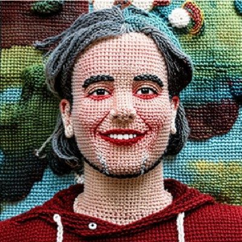
Publications
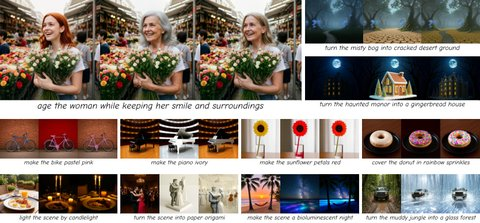
Andreas Floros, Elena Koritska, Teofilo de Campos, Christoph Vogel, Chu-Tak Li, Anuj Sharma, Alexandros Neophytou
arXiv preprint, 2026
paper | PDF
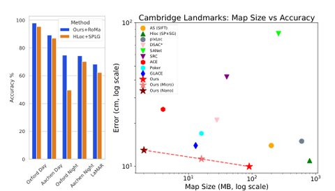
Xudong Jiang, Fangjinhua Wang, Silvano Galliani, Christoph Vogel, Marc Pollefeys
arXiv preprint, 2026
paper
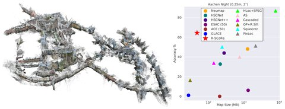
Xudong Jiang, Fangjinhua Wang, Silvano Galliani, Christoph Vogel, Marc Pollefeys
CVPR, 2025
paper | arXiv | code
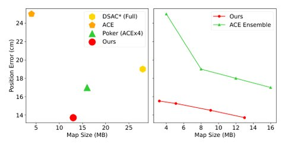
Fangjinhua Wang*, Xudong Jiang*, Silvano Galliani, Christoph Vogel, Marc Pollefeys
CVPR, 2024
paper | arXiv | project page | code | video
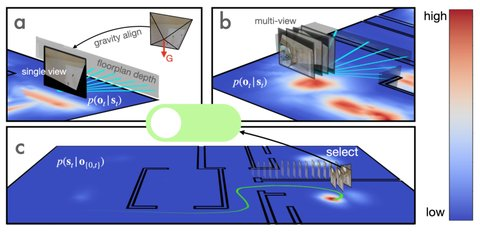
Changan Chen, Rui Wang, Christoph Vogel, Marc Pollefeys
CVPR, 2024 Highlight
paper | arXiv | code
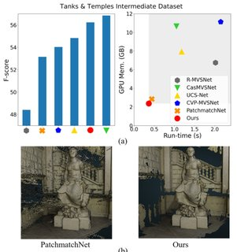
Fangjinhua Wang, Silvano Galliani, Christoph Vogel, Marc Pollefeys
CVPR, 2022
paper | arXiv | code
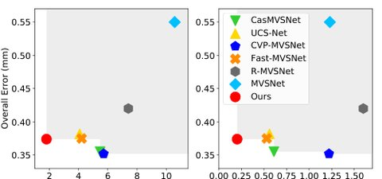
Fangjinhua Wang, Silvano Galliani, Christoph Vogel, Pablo Speciale, Marc Pollefeys
CVPR, 2021 Oral
paper | arXiv | code
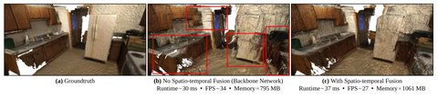
Arda Düzçeker, Silvano Galliani, Christoph Vogel, Pablo Speciale, Mihai Dusmanu, Marc Pollefeys
CVPR, 2021
paper | arXiv | code
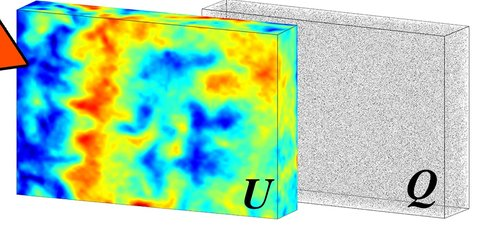
Katrin Lasinger, Christoph Vogel, Thomas Pock, Konrad Schindler
IJCV, 2020
paper | arXiv | GCPR 2018 version
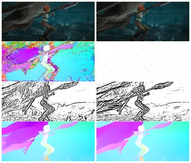
Christoph Vogel, Patrick Knöbelreiter, Thomas Pock
ACCV, 2018
paper | code
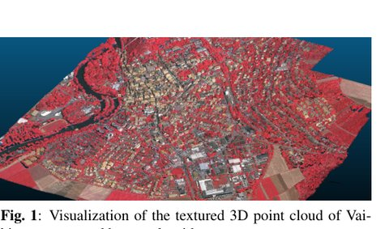
Patrick Knöbelreiter, Christoph Vogel, Thomas Pock
IGARSS, 2018
paper
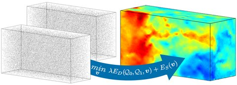
Katrin Lasinger, Christoph Vogel, Thomas Pock, Konrad Schindler
Measurement Science and Technology, 2018
paper | arXiv
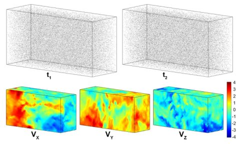
Katrin Lasinger, Christoph Vogel, Konrad Schindler
ICCV, 2017
paper
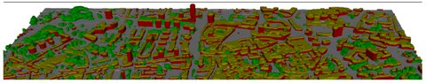
Audrey Richard, Christoph Vogel, Maros Blaha, Thomas Pock, Konrad Schindler
BMVC, 2017 Oral
paper | arXiv | video
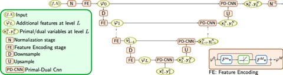
Christoph Vogel, Thomas Pock
GCPR, 2017
paper | ResearchGate
Katrin Lasinger, Christoph Vogel, Konrad Schindler
International Symposium on Particle Image Velocimetry (ISPIV), 2017
paper
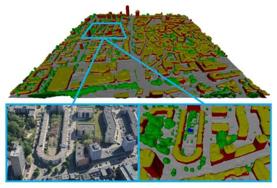
Maros Blaha, Christoph Vogel, Audrey Richard, Jan Dirk Wegner, Thomas Pock, Konrad Schindler
CVPR, 2016 Oral
paper | project page
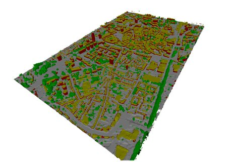
Maros Blaha, Christoph Vogel, Audrey Richard, Jan Dirk Wegner, Thomas Pock, Konrad Schindler
Dreiländertagung DGPF, SGPF und OVG, 2016
paper
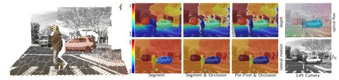
Christoph Vogel, Konrad Schindler, Stefan Roth
IJCV, 2015
paper | code
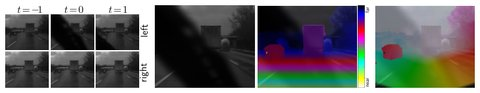
Christoph Vogel, Stefan Roth, Konrad Schindler
ECCV, 2014
paper | preprint | code
Christoph Vogel, Konrad Schindler, Stefan Roth
ICCV, 2013 Marr Prize Honorable Mention
paper | code
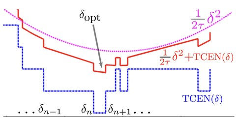
Christoph Vogel, Stefan Roth, Konrad Schindler
GCPR, 2013 Oral
paper | code
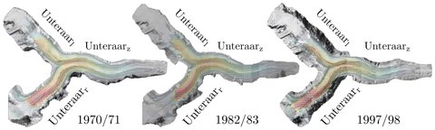
Christoph Vogel, Andreas Bauder, Konrad Schindler
ISPRS Annals, 2012
paper
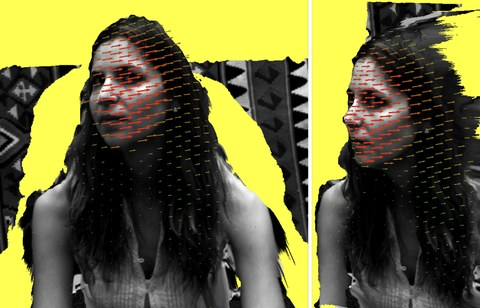
Christoph Vogel, Konrad Schindler, Stefan Roth
ICCV, 2011
paper
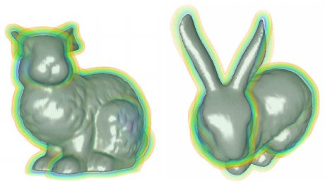
Mario Botsch, David Bommes, Christoph Vogel, Leif Kobbelt
Pacific Graphics, 2004
paper | project page | ResearchGate
* equal contribution
Thesis and book chapter
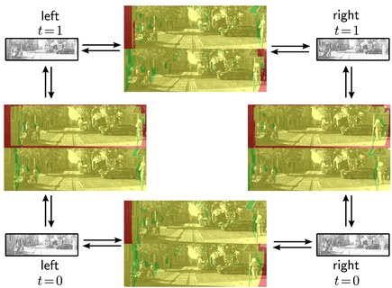
Christoph Vogel, Stefan Roth, Konrad Schindler
Book chapter, Photogrammetrie und Fernerkundung (Handbuch der Geodäsie), Springer, 2017
chapter
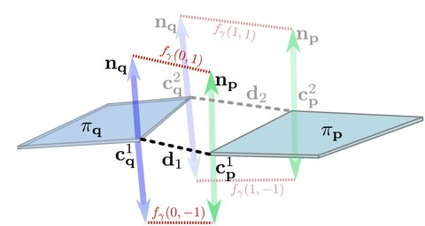
Christoph Vogel
PhD thesis, ETH Zurich, 2015 DAGM MVTec Dissertation Prize 2016
thesis